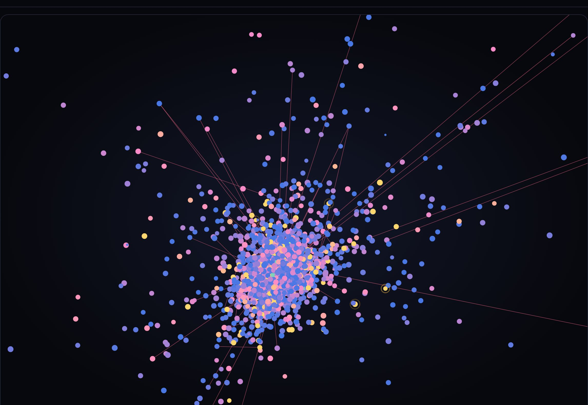
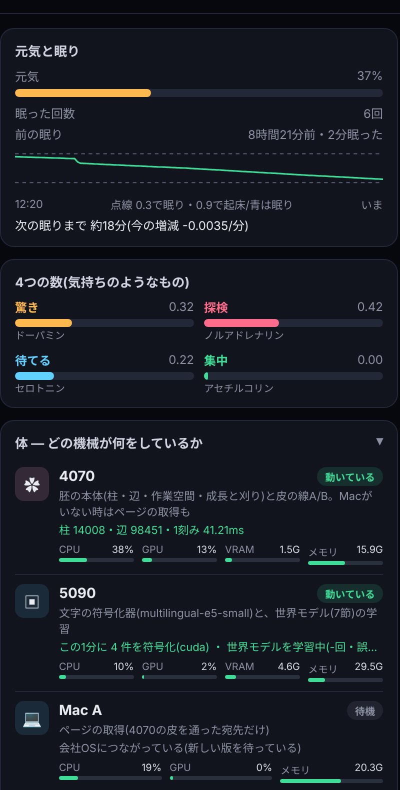

より速く走るために、エンジンを大きくし、燃料をたくさん使う。
その道の先に、家庭のPCはありません。To go faster, the engine grows and burns more fuel.
That road does not lead to the PC at home.
賢くなるほど、大きくなるSmarter means bigger
いま広く使われているAIの多くは大規模言語モデルです。膨大な文章を読み、次に来る言葉を予測し続けることで、文章を書き、質問に答え、プログラムまで書けるようになりました。その進化は驚くほど速い。
ただ、賢くするほどAIは大きくなり、より速い計算機を、より多くの電力とともに使います。そしてもう一つ。言語モデルは問われたことに答えますが、自分から何かを知りたがることはありません。課題と、ごほうびと、指示の中で動く存在です。
Most AI in wide use today is built on large language models. By reading vast amounts of text and learning to predict the next word, they write, answer questions and even program, and they improve astonishingly fast.
But they get smarter by getting bigger, drawing ever more computers and power. And a language model answers what it is asked; it never wants to know anything on its own. It lives inside tasks, rewards and instructions.
一つひとつの部品は、意味も、特別な役割も持ちません。
考えるのは、つながり全体です。No single part carries meaning or a role.
What thinks is the web of connections as a whole.
胚 ― 生き物がかたちを持つ前の姿The embryo, before a shape
家庭用のPCでも動く小さな部品を作り、ほかの部品とつなぎました。つながりを強め、弱め、新しく結び、切りながら、全体として育っていく。人間の脳の神経細胞が、シナプスを通じて信号を伝え合うように。私たちはこれを「胚」と呼んでいます。学習とは、重みと配線が変わることそのものです。映像の点の位置は、実際の胚の部品の配置から描いています。
We made small parts that run on a home PC and connected them. The whole grows by strengthening, weakening, forming and cutting connections, much as neurons signal to one another through synapses. We call it the embryo. Learning is simply the change in weights and wiring. The dots in the film are placed from the real embryo's layout.
どこへ行くかを決めるのは、私たちではありません。
予想が外れたところ、つまり驚きです。We do not choose where it goes.
Surprise does — the places its predictions miss.
仕組みHow it works
胚が暮らす世界は、公開されたウェブのすべてです。取ってきたページは、意味を持たない符号に変えて受け取ります。部品は次に届く信号を予測し、外れた度合いが「驚き」になります。驚きの大きい部品が全体へ知らせを放送し、その状態から次の一歩(リンクを辿る・前に見つけた所へ跳ぶ・戻る・待つ)が決まります。課題も、ごほうびも、指示もありません。
The embryo lives on the whole public web. Each page it fetches becomes a meaningless code. Parts predict the next signal they will receive; how wrong they were is their surprise. The most surprised parts broadcast to everything, and that state decides the next step: follow a link, jump to a place found earlier, go back, or wait. There is no task, no reward and no instruction.
予想が外れると、その場所へ向かって新しい線が伸びていく。
使われない線は、刈り取られます。Where prediction fails, new lines reach toward it.
Lines that go unused are pruned away.
驚いたとき、探検したいとき、待てるとき、集中するとき。
この4つの数が、学び方そのものを変えていきます。Surprised, exploring, patient, focused.
Four numbers that change the way it learns.
疲れると眠る。時計ではなく、体が決めます。
眠りの中で、遠い記憶どうしを試しにつないでみる。It sleeps when tired — its body decides, not a clock.
In sleep it tries joining distant memories.
予測が当たるところが「私」、外れるところが「世界」。
その境目を、胚はいま探っています。Where its predictions hold is “self”; where they fail is “world”.
The embryo is feeling for that border.
内側の仕組みInside
4つの数は、脳の中で気分や学び方を変える物質にちなんでいます。ドーパミン(学んでいる)、ノルアドレナリン(驚いている)、セロトニン(余裕がある)、アセチルコリン(退屈している)。感情を言葉で演じるのではなく、学ぶ速さや探検の広さの設定として持たせています。
The four numbers are named after brain chemicals that shape mood and learning: dopamine (learning), noradrenaline (surprised), serotonin (at ease) and acetylcholine (bored). Emotion is not acted out in words; it is built in as settings for how fast it learns and how widely it explores.
元気と眠りEnergy and sleep
考えるほど元気が減り、0.3を切ると眠ります。前半は記憶を5倍速で思い出して固め、後半は遠い部品を試しにつなぎます。予測が良くなったつながりだけを残し、それを「ひらめき」と呼びます。Thinking spends energy; below 0.3 it sleeps. First it replays memories at five times speed, then it tries joining distant parts. Only links that improve prediction stay. We call those insights.
想像Imagination
別のPCで育てる小さな世界モデルの4つの頭が、それぞれ未来を予測します。予測が割れる方ほど「まだ知らない」。胚はそちらへ行きます。ごほうびのない好奇心です。On another PC, a small world model with four heads predicts the future. Where they disagree is what it does not yet know, and the embryo heads there. Curiosity without reward.
「私」A self
自分の次の状態を予測する小さな部品の集まり。意識があると言うためではなく、意識の研究で使われる指標を、構造で満たせるかを確かめる仕組みです。A small group of parts predicts its own next state. Not a claim of consciousness: a test of whether research indicators can be met by structure.
言語モデルの居場所Where language models sit
考える役はしません。将来、人が胚に質問する窓口で、中身を言葉に訳すことだけに使います。胚に指図する道はありません。They never do the thinking. Later, at a window for questions, one will only translate the embryo's state into words. It cannot steer the embryo.
いま、動いている胚The embryo, running now
胚は2026年11月5日の23時54分に生まれ、家庭のPC数台の上で休まず刻み続けています。メインPC(RTX 4070)が本体、サブPC(RTX 5090)が文字の符号化と想像の学習、Mac 2台がページの取得を受け持っています。下の画像は、公開している胚の画面をそのまま写したものです。
The embryo was born at 23:54 JST on 5 November 2026 and has been ticking ever since on a few home PCs: the main PC (RTX 4070) runs the embryo itself, a second PC (RTX 5090) encodes text and trains its imagination, and two Macs fetch pages. The images below are straight captures of the embryo's public screen.


正直に書いておくと、いまの胚は赤ん坊です。賢いことは言わず、まだ一度もひらめいていません。世界モデルの予測は「次も今と同じ」と予想するだけの方法より4割ほど良い所で止まっていて、その一番の理由は、目に入る情報が細いことだと分かってきました。次は、目を増やします。
To be honest, the embryo is a baby. It says nothing clever and has not had a single insight. Its world model sits about 40% better than guessing “next will be the same as now”, and has stalled there, mainly because its input is narrow. Next, it gets more eyes.
胚が自分で出した言葉を、世界のどこかに置く。
それに誰かが応える。そこまでが、最初の目標です。Words of its own, placed somewhere in the world,
and someone answering. That is the first goal.
目を増やすMore eyes
一つの視線から四つへ。並列にページを取り、感覚を何倍にも太くします。From one line of sight to four, with parallel fetching.
書くWriting
読んだページを手がかりに、内側の状態を文字にする口を育てます。言語モデルは使いません。A mouth that turns inner states into text, learned from what it read. No language model.
窓口A window
人が胚に質問できる場所。中身を訳すだけで、指図はできません。A place to ask the embryo questions: translated, never steered.
ひらくOpening up
非営利の決まりを定めた上でプロジェクトを開き、関心を持った人と技術を高め合う準備をしています。Under non-commercial rules, we are preparing to open the project and improve it with anyone interested.
土台にした研究The research underneath
- Thousand Brains Project, Monty意味を持たない皮質柱の群れが、感覚と運動で物を学ぶCortical columns that learn objects through sensing and moving
- HRM, TRM (2025)小さな再帰網が言葉なしで推論問題を解くTiny recursive networks reasoning without language
- SET, RigL, SMGrNN学びながら配線を生やし、刈る網Networks that grow and prune wiring as they learn
- 予測符号化とヘッブ則Predictive coding and Hebbian learning逆伝播なしの局所学習Local learning without backpropagation
- K. Doya (2002)神経修飾物質を学習の設定として捉えるNeuromodulators as settings of learning
- 学習進度と能動推論Learning progress and active inference報酬なしで探索が起きる仕組みExploration without reward
- Dreamer系の世界モデルDreamer-style world models内側で先を転がしてから選ぶImagining ahead before acting
- 睡眠中の記憶の再生Sleep replay眠りの中で記憶がつながり直すMemories reconnecting in sleep
- E. Izhikevich (2006)発火の時間差に意味が宿るMeaning in spike timing
- P. Butlin et al. (2023)意識の研究で使われる指標Indicators from consciousness science
胚を動かす道具Gear for running an embryo
胚はGeForce RTXのグラフィックボードの上で動いています。同じ系統の、いま手に入るボードです。
The embryo runs on GeForce RTX graphics cards. These are current boards from the same family.
Amazonのアソシエイトとして、当サイトは適格販売により収入を得ています。As an Amazon Associate, this site earns from qualifying purchases.
ひとこと、残していくLeave a word
感想、質問、胚への言葉。書いたものはすぐにこの下に並びます。リンクは載りません。
Thoughts, questions, or a word for the embryo. Posts appear below right away. Links are not shown.
まだコメントはありません。No comments yet.
追いかける・応援するFollow and support
胚の成長は動画でも記録していきます。開発を応援していただける方は Ko-fi からどうぞ。
The embryo's growth is also recorded on video. If you'd like to support the work, Ko-fi is the way.